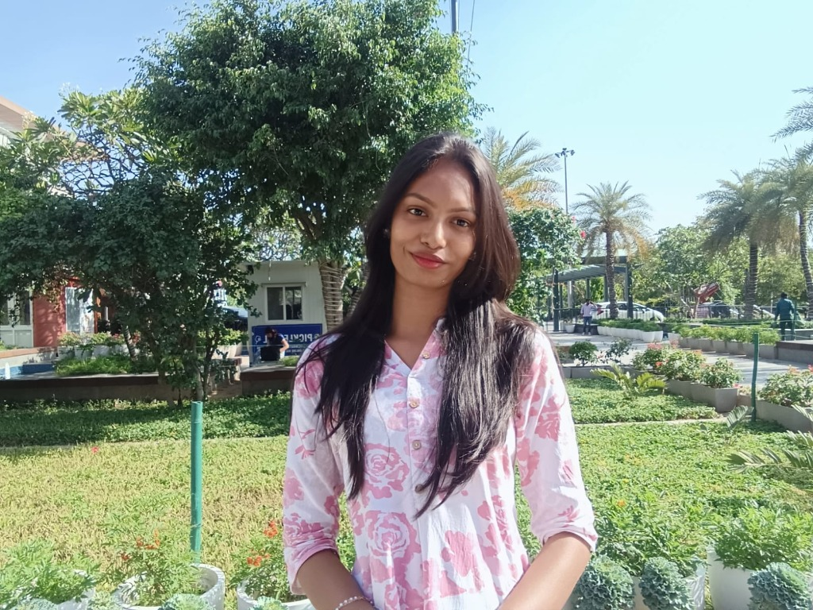

Creative Developer & AI Enthusiast
B.Tech CSE AIML | Batch 2029
I believe that technology should not only be functional but breathtaking. In my first year of B.Tech, I am exploring the deep layers of Artificial Intelligence to build products that feel alive.
This portfolio is a culmination of my academic foundation and my creative drive.
Timeline: 2025 - 2029
Focusing on Data Structures, Discrete Math, and Neural Networks. Consistently maintaining top-tier academic performance while leading local student tech circles.
Proficient in Python libraries like NumPy and Pandas for processing complex datasets.
Exploring regression and classification algorithms for real-world impact.
Building high-performance interfaces with JavaScript and optimized CSS.
Creating consistent, reusable component libraries with a focus on Glassmorphism.
A flagship analytics platform designed for real-time AI model monitoring. Features high-density charts and a sleek dark-glass interface.
A luxury fashion experience that prioritizes minimalist design and ultra-smooth user transitions. 2026 Production.
Published research interests in how AI will automate frontend layout generation by the time I graduate.
Exploring the ethics of AI and its role in modern workforce transformation.
Active member of the MRU Tech Club. Collaborating with cross-disciplinary teams to integrate AI solutions into university infrastructure projects.
Leading the Freshman Coding Sync circle.
sakshi_singh25@mru.ac.in
Manav Rachna University, Faridabad
LinkedIn: linkedin.com/in/sakshi-singh